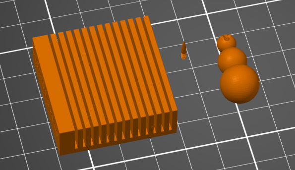
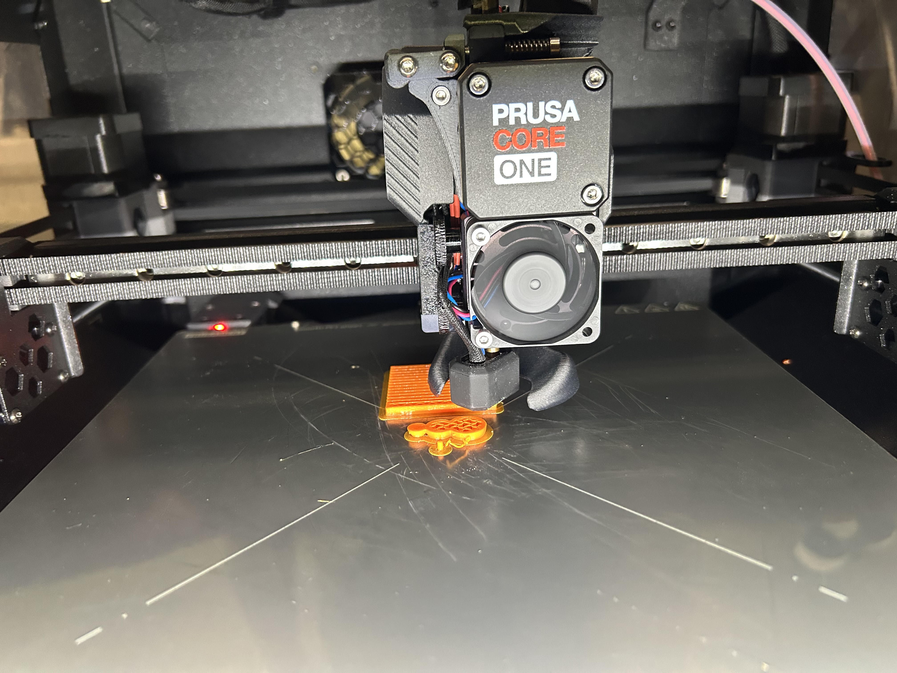

Design a small object on a parametric CAD system and 3D print it on an FDM printer from the UNCC print farm, using the print to explore how infill percentage, infill pattern, and wall thickness affect the final part.
The part is a card holder: a base with a row of thin vertical fins that hold cards standing upright in the gaps between them. It fits inside a 1.5 in × 1.5 in × 0.5 in envelope, which was the maximum volume allowed for the lab.
I didn't start with a fixed idea of what to design, so I began by modeling a solid cube at the maximum allowed dimensions in SolidWorks, then cut something useful out of it. Using the linear pattern feature, I cut a series of fin slots starting 5 mm from one edge and continuing to the opposite edge, with each cavity 3 mm wide. I then added fillets to every edge except the ones on the base, so the part wouldn't sit flush and sharp against a table or catch on anything while cards are slid in and out.

The card holder (fin block, left) sits alongside my lab partner James McAdam's Snow Man and Carrot Nose print (right), sharing the same plate and print settings.
Honeycomb and Gyroid were covered in class, so the three patterns below are ones I researched independently.
Triangular
Geometry: A grid built from equilateral triangles printed in three directions, so the paths overlap within a single layer.
Why used: Because a triangle can't deform without stretching or compressing one of its edges, this pattern resists shear and racking forces well and performs strongly in tension along the triangle axes, at roughly the same print time and material cost as a simple grid.
Cubic
Geometry: Interlocking cubes oriented at 45° to the print axes, so a cube face is presented toward each of the X, Y, and Z directions.
Why used: The diagonal cube struts convert a compressive load from above into tension within the struts, which PLA and PETG resist well, making Cubic a good choice for bases, feet, handles, and brackets that are mainly loaded from one direction.
Lightning
Geometry: A minimal branching, tree-like structure that only grows dense directly beneath top solid surfaces, instead of filling the whole interior with a repeating pattern.
Why used: It uses the least material and time of any pattern because it isn't meant to add structural strength. It exists only to keep the top layers from sagging while they bridge over empty space, so it's best for decorative or non-structural prints where speed matters most.
Printer: Prusa CORE ONE, 0.4 mm nozzle. Material: Generic PLA. Print profile: 0.10 mm FAST DETAIL (modified). Supports: for support enforcers only. I didn't need to scale the part, it was modeled directly at the 1.5 in × 1.5 in × 0.5 in size limit, so it went straight onto the plate at 100%.
.png)
.png)
I raised perimeters from the profile's default of 2 to 3. More perimeters mean more solid wall material surrounding the infill before the pattern itself contributes anything, which matters here because the fins are thin and get flexed every time a card is slid in or pulled out. The extra wall thickness gives them more resistance to snapping at the base.
.png)
Fill density was set to 25%, with a Gyroid pattern. Gyroid is a triply-periodic surface with no long straight internal walls, so it distributes load roughly evenly in every direction and resists warping better than a simple grid, a reasonable match for fins that get pushed sideways from different angles as cards go in and out.
.png)
Brim type was set to outer brim only, 3 mm wide. This was for James's Snow Man and Carrot Nose, not the card holder, since his parts were smaller and more prone to poor bed adhesion, especially printing in a heated chamber.
Sliced result: 17.74 g / 5.95 m of filament (14,303.64 mm³), estimated cost $0.45, estimated print time 1h 02m in normal mode / 1h 10m in stealth mode.
How does infill percentage affect mechanical properties?
Infill percentage controls how much of the part's interior, inside the perimeter walls, is filled with the infill pattern versus left open. Higher density increases stiffness and compressive strength and gives a crack less open cavity to travel through, but strength gains taper off past roughly 40 to 50 percent while weight, material, and time keep climbing linearly. In practice, the perimeter walls do most of the work for strength; infill mainly resists compression and keeps top surfaces from sagging while they bridge over empty space. This part used 25%, appropriate for a lightly loaded desk object rather than a structural part.
How do different infill patterns affect mechanical properties?
At equal density, different patterns place the same amount of material differently, which changes how the part responds to load direction. Line-based patterns like Grid or Triangular are fast to print and stiff within the plane they're printed in, but don't tie adjacent layers together, so they're comparatively weak in Z. Triply-periodic patterns like Gyroid stay continuously connected in all three dimensions, giving more even, isotropic strength, which is why Gyroid was chosen here over a simpler pattern.
Why use different wall thicknesses?
Wall thickness (perimeter count × line width) sets how much fully solid material surrounds the infill. Thin walls save time and material and are fine for cosmetic or barely-loaded parts, but they're vulnerable to punching through under a point load and to layer separation. Thicker walls, like the 3 perimeters used here, add strength and surface durability and can make a part watertight even at low infill, at the cost of extra filament and time. The right choice depends on where a part will actually be loaded relative to its outer surface, fins that get flexed every time a card is inserted or removed benefit from the extra wall thickness used here.

[Video Here]
I printed alongside James McAdam on Prusa CORE One #2, sharing a plate with his Snow Man and Carrot Nose.
Mistake caught: PrusaSlicer flagged cardholder.STL with a non-manifold mesh warning before slicing. I used the slicer's built-in auto-repair rather than going back into SolidWorks, which fixed the mesh and let the part slice normally.
Starting from a solid block at the maximum allowed size and cutting into it, instead of building the fins up from nothing, made it easy to guarantee I stayed inside the lab's size limit while still iterating on the fin spacing. The linear pattern feature meant changing the cavity width or count later would only take editing one dimension, not redrawing every fin by hand.
The mesh warning on cardholder.STL was a mistake I caught before it reached the printer, but auto-repair only checks that the mesh is watertight and printable, it doesn't check that the design is still correct. A flaw I might not have caught the same way is a wall or fin sized too close to the nozzle's minimum printable width: the slicer would silently thin it out or skip it entirely without any warning, and I wouldn't know until the part came off the bed weaker than intended. Checking a part's thinnest features against the nozzle diameter before slicing, not just relying on the mesh-repair warning, is something I'd build into my process next time.
If the infill percentage or wall thickness decisions made here were applied to a structural or safety-critical part instead of a desk card holder, getting them wrong could mean the difference between a part that yields visibly and one that fails suddenly under load. A real-world parallel: a bike helmet's EPS foam liner and shell thickness are chosen specifically for how they absorb and distribute impact energy. Too thin a wall or too sparse an internal structure, and the same design intent that made this card holder's fins flex safely instead of snapping could instead mean a helmet cracking through instead of protecting the rider.
The whole lab, from opening the CAD file to walking away with the printed part, took about 5 hours.
3D printing infill density: Optimizing strength and speed
AI was used to help find sources discussing these topics.
Design file: cardholder.STL